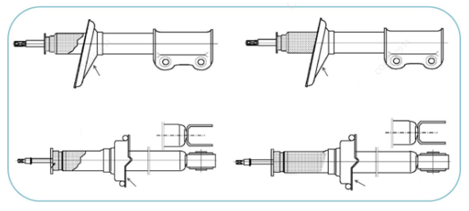
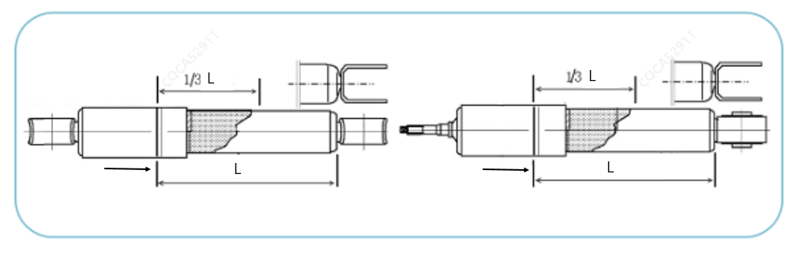
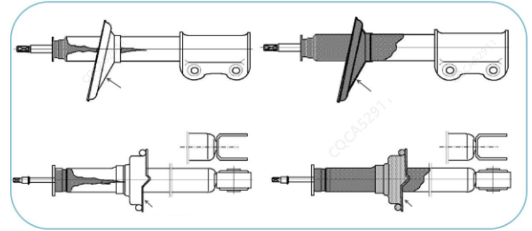
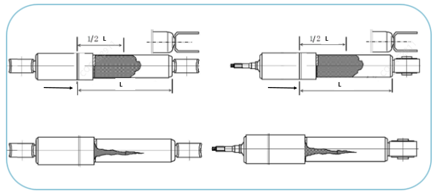

Принцип работы амортизатора заключается в преобразовании кинетической энергии в тепловую за счет жидкости амортизатора с ее последующим рассеиванием в атмосферу. По мере увеличения времени эксплуатации изделия или роста пробега на поверхности резервуара для хранения масла в процессе работы амортизатора могут появляться следы масла; в этом случае необходимо правильно определить, является ли это "отпотеванием (выделением масла)" или "утечкой масла". Если это отпотевание, то это нормальное явление, не требующее никаких мер; если это утечка масла, необходимо заменить амортизатор в сборе (отдельный элемент).
Отпотевание (выделение масла): микроскопическое количество масла, снимаемое маслосъемным сальником с поверхности штока поршня в процессе работы амортизатора.
Механизм отпотевания:
Для повышения срока службы деталей амортизатора поверхность штока поршня обычно подвергается хромированию и шлифовке с образованием сетчатых "микротрещин" на поверхности штока поршня; микроскопическое количество жидкости амортизатора задерживается в сетчатых микротрещинах на поверхности штока поршня, образуя масляную пленку. Это обеспечивает полужидкостное трение между штоком поршня и сальником, снижает силу трения между ними и повышает надежность амортизатора, а также его характеристики NVH. При возвратно-поступательном движении штока поршня вверх и вниз температура амортизатора повышается, и микроскопическое количество масла образует масляный туман, который оседает на поверхности масляного резервуара, создавая явление "отпотевания".
Утечка масла: наличие утечки масла из внутренней части амортизатора на его внешнюю поверхность в стационарном или рабочем состоянии.
Ложная утечка масла: загрязнение внешним маслом.
Поскольку условия работы амортизатора довольно тяжелые, брызги воды или масла с дороги могут попасть на цилиндр амортизатора, вызывая ложную утечку масла; при проверке необходимо тщательно изучить следы масла для определения утечки. Наличие масляных пятен на цилиндре амортизатора или его частях, если они носят прерывистый характер и не имеют явного источника утечки, может расцениваться как загрязнение внешним маслом во время движения.
Определение отпотевания: для амортизаторов с пружинной чашкой
Следы масла видны, но не имеют блеска или представляют собой высохшие масляные пятна, смешанные с пылью; прикосновение рукой к поверхности масляных следов не оставляет заметных следов масляных пятен на отпечатках пальцев;
Масляные пятна распределены равномерно по окружности на поверхности цилиндра, без "потеков" или "струйных" следов; масляные пятна распределены от поверхности торцевой крышки цилиндра амортизатора до верхней части пружинной чашки (указано стрелкой).

Определение отпотевания: для амортизаторов без пружинной чашки
Следы масла видны, но не имеют блеска или представляют собой высохшие масляные пятна, смешанные с пылью; прикосновение рукой к поверхности масляных следов не оставляет заметных следов масляных пятен на отпечатках пальцев;
Масляные пятна распределены равномерно по окружности на поверхности цилиндра, без "потеков" или "струйных" следов; длина распределения масляных пятен по оси не превышает 1/3 (включительно) от общей длины цилиндра. (Торцевая крышка цилиндра указана стрелкой)

Определение утечки масла: для амортизаторов с пружинной чашкой
Поверхность цилиндра черная или даже имеет большое количество масляных следов; прикосновение рукой к поверхности масляных следов оставляет видимые невооруженным глазом масляные следы на отпечатках пальцев;
Масляные пятна распределены неравномерно, стекают в виде "потеков" или "струй" ниже позиции пружинной чашки (указано стрелкой).

Определение утечки масла: для амортизаторов без пружинной чашки
Поверхность цилиндра черная или даже имеет большое количество масляных следов; прикосновение рукой к поверхности масляных следов оставляет видимые невооруженным глазом масляные следы на отпечатках пальцев;
Масляные пятна распределены неравномерно, стекают в виде "потеков" или "струй" на расстояние, превышающее 1/2 общей длины цилиндра. (Торцевая крышка цилиндра указана стрелкой)

Детали, в отношении которых установлено внешнее загрязнение маслом или отпотевание, заменять запрещается; их можно использовать дальше после протирки;
Детали, в отношении которых установлена утечка масла, могут быть заменены в виде отдельного элемента амортизатора (замена передняя стойка в сборе запрещена), при этом необходимо загрузить информацию о ремонте в соответствии с соответствующими требованиями Changan;
По возможности не производить определение утечки масла амортизаторов в дождливую или снежную погоду; при необходимости проведения проверки следы масла, воды и т. д. на амортизаторе должны быть тщательно вытерты и очищены, после чего следует выполнить повторную поездку для проверки;
Для автомобилей с подтвержденной утечкой масла на одностороннем амортизаторе ремонт выполняется только для одного амортизатора, парный ремонт не допускается.